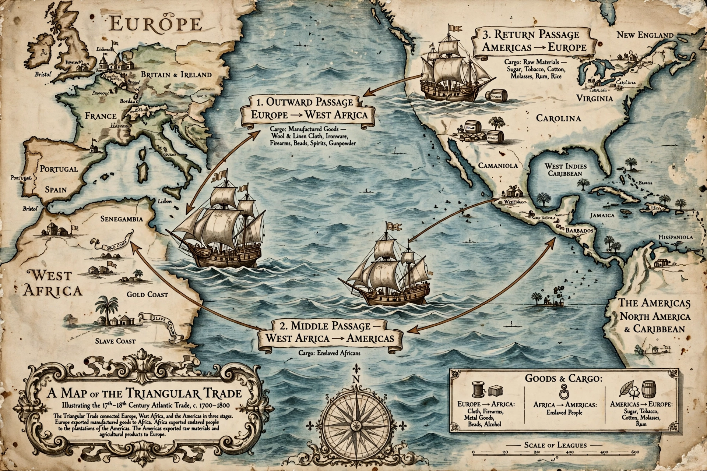

Triangular trade describes the pattern of colonial commerce across the Atlantic from the 16th to the 19th century: manufactured goods from Europe to Africa, enslaved Africans carried via the Middle Passage to the Americas, and plantation products such as sugar, tobacco and cotton back to Europe.

Ships left ports such as Liverpool, Bristol, Nantes and Lisbon with textiles, guns and metalware traded for captives on the West African coast. The Middle Passage carried an estimated 12.5 million enslaved Africans, with roughly 10.7 million surviving to the Americas. Sugar, rum, tobacco and cotton then returned to Europe, enriching port cities and insurers.
The trade devastated African societies, built plantation economies, and drove the African diaspora across the Americas. Abolition of the slave trade by Britain (1807) and the United States (1808), followed by emancipation, ended the classic triangle, though illegal trading persisted for decades.